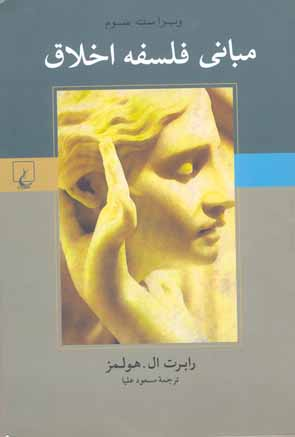

پذيرش > سایت نوشته ها > فمنیسم و اخلاق/فیروزه مهاجر


 فمنیسم و اخلاق/فیروزه مهاجر فمنیسم و اخلاق/فیروزه مهاجر
26 اسفند 1386 - - نسخه قابل چاپ
رسم بر این است که هر کتابی را که در عنوانش کلمه زن، جنسیت یا فمینیسم و امثال این ها هست بخریم و بخوانیم. کتاب هایی را که فاقد این ویژگی اند، اگر اتفاقا متوجه شویم که فصل هایی هم درباره فمینیسم، جنسیت یا به طور کلی زنان دارند، البته می خوانیم اما نه همیشه. حالا ما می خواهیم چند تا از این گروه دوم را که در سال های اخیر منتشر شده اند و اتفاقی به آن ها برخورده ایم بتدریج معرفی کنیم. کتاب هایی که می خواهیم تشویق تان کنیم بخوانید در ضمن آن هایی هستند که توصیه می کنیم بخرید و به عنوان مرجع داشته باشید. از این توصیه پیداست که دست کم ما نمی توانیم تفکیکی قطعی بین کتاب های خواندنی و مرجع، و اختصاصا مربوط به جنسیت، فمینیسم و زنان و کلی تر قائل شویم. در هر زمینه همه جور کتاب هست.
بسیاری از کتاب ها از این قبیل اند، به چیزهایی می پردازند که معطوف به گذشته، حال و آینده اند و مربوط به همه. نمی توان آن ها را خواند و فراموش کرد. تاثیری ماندگار بر ذهن می گذارند و دانش ما را واقعا گسترش می دهند.
نخستین کتاب از این مجموعه مبانی فلسفه اخلاق، نوشته رابرت ل. هولمز استاد فلسفه در دانشگاه روچستر است که در ژوییه 2002 منتشر شده. ترجمه فارسی این متن در پاییز 1385 توسط نشر ققنوس با ترجمه مسعود علیا به چاپ رسیده است.

در پشت جلد کتاب می خوانیم: "مبانی فلسفه اخلاق چنان که از نامش پیداست کتابی پایه است که مهم ترین و بنیادی ترین سررشته ها را برای راه یافتن به قلمرو اخلاق شناسی به دست می دهد. نویسنده کوشیده است اساسی ترین نظریه های اخلاق را در سنت فلسفی غرب، از دوران باستان تا دهه های اخیر، معرفی کند و چند و چون آن ها را نمایان سازد و در بوته نقد گذارد. در ویراست حاضر فصلی نیز درباره اخلاق فمینیستی آمده است که در شناسایی بیش تر این رویکرد راهگشاست."
این فصل افزوده به ویراست سوم متن انگلیسی از صفحه 401 تا صفحه 439 کتاب را که با پیوست، کتابشناسی و نمایه 488 صفحه است می گیرد. چیز یادی نیست اما نسبت به حجم کتاب قابل توجه است.
با مراجعه به متون فمینیستی در تعریفی کلی می توانیم بگوییم، اخلاق فمینیستی نوعی نظریه اخلاقی است که به واسطه توجهش به تجربه سرکوب زنان متمایز می شود و در پی نقد و تغییر ساختارها و رفتارهای غیرعادلانه اجتماعی است. این اخلاق فمینیستی از یک سو نقد نظریه پردازی اخلاقی جریان غالب است، و از سوی دیگر تلاشی برای شکل دادن به نظریه های اخلاقی جدید که با زندگی زنان ربط می یابند. این یک حوزه پژوهش رو به رشد در قلمرو فلسفه اخلاق است و در 20 سال گذشته بخصوص کتاب ها و مقالات زیادی در این زمینه منتشر شده است که به ابعاد مختلف قضیه می پردازند و بعدا به این بحث یر خواهیم گشت.
اما مبانی فلسفه اخلاق یک کتاب درسی است و هولمز در پیشگفتار می نویسد که در این جا فقط از مبانی صحبت می شود. در نهایت نیز هولمز به این نتیجه می رسد که نقد اخلاقیات سنتی و جریان غالب آن چیزی است که فلسفه اخلاق فمینیستی از پسش برآمده، و در قلمرو نظریه پردازی وارد شدن ضرورتی ندارد. کتاب در پنج بخش و 14 فصل تنظیم شده است. فصل 13 مربوط به اخلاق فمینیستی است، که منظور از آن نظریه های اخلاق فمینیستی است، و با سرلوحه ای نوشته ویرجینیا هلد شروع می شود: "تنها نظریه اخلاق فمینیستی می تواند چندان که باید و شاید به درک آن بدیل های نظریه اخلاق سنتی راه یابد که تجربه زنان آن ها را اقتضا می کند."
هفت قسمت این فصل فرایند شکل گرفتن مبانی اخلاق فمینیستی را دنبال می کنند: قسمت نخست "تشکیک در اخلاق سنتی" است، که البته خاص نظریه های فمینیستی اخلاق نیست. هولمز در نقدهای فمینیستی به اخلاق سنتی از آنت بیر نقل قول می کند که به نوبه خود پژوهش های کارول گیلیگان را مبنا قرار می دهد، برای این بحث خود که تصور زنان از اخلاق با مردان فرق دارد، علی الخصوص با مردانی که با شور و حرارت بر ادعاهای نظریه های میثاق باورانه - کانتی اخلاق که امروزه روز مرسوم و مقبول است صحه می گذارند.
می دانیم که تخصص گیلیگان در روانشناسی رشد بود و این ایده را پی گرفت که ممکن است در واقع بین "آرای اخلاقی" زنان و مردان تفاوت باشد و این حرف بحث های زیادی را برانگیخت درباره این که فعالیت ها و خصلت های به طور سنتی "زنانه" ممکن است مبنایی برای یک اخلاقیات متفاوت و احتمالا برتر باشند.
به این ترتیب، در این قسمت اول فصل 13 با آن گروه از فمینیست ها آشنا می شویم که معتقدند اخلاق، بر خلاف ریاضیات، برای همه یکسان نیست. در فصل های قبلی هولمز درباره شخصیت های اصلی در تاریخ اخلاق، ارسطو، کانت، و نیچه و دیدگاه هاشان درباب اخلاق به ما اطلاعاتی می دهد. در هیچ یک از موارد زنان کنشگران اخلاقی نیستند. نخستین اخلاق گرایان فمینیست [ یعنی، جان استوارت میل و مری وولستنکرافت] معتقدند تفاوت ذاتی نیست و زن و مرد در نظریه لااقل جایگاه یکسانی به عنوان کنشگران اخلاقی دارند و بنابراین مسئله اخلاقی برای زنان این است که چطور حقوق مساوی را که حق شان است مطالبه کنند. به همین دلیل است که می گوییم از آغاز بحث اخلاق برای زنان با سرکوب عجین شده است. حتی وقتی فرقی بین اخلاق مردانه و زنانه نبینند.
در قسمت دوم، یعنی در "اخلاق فمینیستی چیست؟" هولمز به توضیح اخلاق فمینیستی می پردازد و سه مقوله عام اخلاق فمینیستی را مطابق با داوری هایی که نظریه های فلسفی فمینیستی بیان می دارند و انواع این داوری ها متمایز می کند. از جمله این داوری ها عبارتند از اخلاق گوهرین [یا هنجاری]، شامل این که زنان ذاتا با مردان برابرند و تبعات الزامی این برابری؛ فرا اخلاق، که خود به نظریه پردازی اخلاقی می پردازد؛ و در کل مجموعه ای قضایا که از متون فمینیستی بیرون کشیده شده و نویسنده معتقد است ملاک و محک برای طبقه بندی به دست می دهد؛ درست مانند فصل های دیگر کتاب.
اقسام نظریه های فمینیستی با بحث "اخلاق فمینیستی حداقلی: نظریه مبتنی بر حقوق وولستنکرافت " شروع می شود و کتاب دفاع از حقوق زن. به گفته هولمز، وولستنکرافت بر این باور است که برای مردان و زنان اخلاق یا اخلاقیات واحدی وجود دارد و این اخلاق یا اخلاقیات عام و جهانگستر است.
هولمز می نویسد، "زنان که وادار شده اند شان و مرتبه فروتر خود را بپذیرند، راه هایی گشوده اند و گسترش داده اند برای این که هر قدرت محدودی را که از موضع ضعف خویش می توانند به کار اندازند اعمال کنند. بدین قرار وولستنکرافت می گوید: "چه بسیار دیده ام هنرها و نیرنگ هایی را که زنان ابله از راه عشوه گری – کلمه ای بسیار پر معنا برای توصیف ترفندی از این دست – برای قطع گفتگویی عقلانی به کار می بندند که باعث می شود مردان فراموش کنند که آن ها زنانی ظریف هستند" (وولستنکرافت، ص. 181). به اعتقاد او، زنان باید نسبت به ماهیت و گستره سرکوبی که بر آنان رفته است و نیز نسبت به نحوه هایی که فریب شان داده اند تا به دوام سرکوب یاری برسانند آگاهی پیدا کنند." (هولمز، ص. 409)
هولمز این جملات را هم از وولستنکرافت نقل می کند "من مرد را به عنوان همتای خود دوست می دارم، اما عصای سلطنت او، خواه به واقع از آن خودش باشد خواه غصبی، تا جایی که من ایستاده ام دراز نمی شود، مگر این که عقل یک فرد خواستار کرنش من باشد. و حتی در آن حال این فرمانبرداری در برابر عقل است نه در برابر مرد. در واقع کردار موجودی مسئول باید با اعمال عقل خودش میزان شود؛ والا عرش خداوند بر چه پایه ای استوار است؟" (وولستنکرافت، ص. 29) تا بگوید که منظور او از "مسئولیت" تلویحا این است که فاعلیت اخلاقی – قابلیت عمل کردن آزادانه بر وفق ضوابط مربوط به درست و نادرست – مستلزم آن است که افراد بتوانند بر وفق اوامر عقل خویش عمل کنند. چیزی که کانت هم به گفته هولمز به آن معتقد بود.
نکته مهم دیگر بحث وولستنکرافت که هولمز عنوان می کند این است که او مدعی است سرکوب زنان بنیان اخلاق یا اخلاقیات را هم به طور نظری و هم به طور عملی بر می افکند. هولمز می نویسد، وولستنکرافت در نهایت به این بحث می رسد که ستمی که در دادن جای قوانین مربوط به وظیفه اخلاقی به قواعد ناظر بر حفظ آبرو و خوش نامی، در استفاده از عقل زنان به صورت زنجیرهایی بر دست و پای آن ها، و در استفاده از "فضایل" زنانه برای تضمین فرمانروایی مردان، و... به زنان روا می شود از نوع خاصی است. این ستم در طول زمان شکلی به خود گرفته که وضعیت مصیبت بار زنان را از سایر گروه های سرکوب شده متمایز کرده است. این ستم "تنزل منزلت است. زنان ممکن است و جایز است که محبوب و عزیز باشند، ولی اگر سوای این از سر احترام با آن ها رفتار نشود، خوار و خفیف شده اند." (هولمز، ص. 412) این شکنندگی و آسیب پذیری را که وولستنکرافت نقد می کند در نوشته های سیمون دبووآر هم مورد بحث است. منتها در مقایسه با دوبووآر نظریه اخلاق وولستنکرافت یک نظریه اخلاق فمینیست حداقلی است، هرچند معتقد است "میدان عمل فمینیستی (گرچه او این اصطلاح را به کار نمی برد) که در چارچوب عام نظریه اخلاق سنتی مشخصا نظریه ای مبتنی بر حقوق است چنان در کار خود پیش می رود که گویی اخلاق سنتی فی نفسه ایرادی ندارد، بلکه ایراد تنها در داوری هایی است که این اخلاق پشتیبان آن ها بوده است و نیز در آن قسم رفتار با زنان که این اخلاق موجه دانسته است." (هولمز، ص. 414)
چهارمین قسمت "اخلاق فمینیستی متعارف: اخلاق مبتنی بر مراقبت" بحثی عمدتا در حوزه مادری است که در آن توجه و مراقبت جای سلطه و بهره کشی را می گیرد. هولمز، همراه با فمینیست ها، فلسفه اخلاق غرب را متهم به ندیدن اهمیت اخلاق مبتنی بر توجه و مراقبت می کند. او می نویسد تا حدی "اخلاق مبتنی بر مراقبت سوابق و اسلافی در گذشته های دور دارد که سلسله آن ها تا لائوتزو، فیلسوف چین باستان (حدود قرن ششم قبل از میلاد) می رسد." شاید شبیه به "دریافت بودا از شفقت و دریافت مسیح از محبت" (ص. 416) که البته این هم سوابقی در نظریه اخلاق دارد: دریافت هیوم که "در قرن هجدهم نهال اخلاق را در خاک همدلی نشاند،" و "شوپنهاور که در قرن نوزدهم این نهال را در خاک رحم و شفقت کاشت." (همان)
اما در این نظریه به نگرش های مختلفی بر می خوریم. برخی این نوع اخلاق مبتنی بر توجه و مراقبت را خاص زنان می دانند و برخی خاص همه موجودات تکامل یافته. هولمز از نل نادینگز ، فیلسوف فمینیست معاصر، نقل می کند که می گوید، "به گمان من اخلاق مبتنی بر مراقبت خصلتا و اساسا زنانه است – البته این حرف به آن معنا نیست که مردان نمی توانند در آن سهیم شوند، همان قدر که حکایت از آن ندارد که لاجرم می خواهیم بگوییم که زنان نمی توانند به نظام های سنتی اخلاق اعتقاد آورند. ولی، به عقیده من، اخلاق مبتنی بر مراقبت از دل تجربه ما زنان پدیدار می شود، درست همان طور که رویکرد منطقی سنتی به مسائل اخلاقی به طرزی مشهودتر از تجربه مردانه بر می خیزد." (هولمز، ص. 417)
گاهی توجه و مراقبت، خاص زنان و نقش زنان می شود و بنابراین دو نوع متفاوت تفکر اخلاقی را باعث می شود. "با این انحای متفاوت تفکر دو اخلاق متفاوت همراه است – اخلاق مردانه مبتنی بر حقوق و اخلاق زنانه مبتنی بر مراقبت." (همان) برخی فیلسوفان فمینیست، مانند سارا رادیک ، بر بعد مادرانه توجه و مراقبت متمرکز می شوند. رادیک از قرار "نه تنها قائل به این است که موضع معرفت شناسانه فمینیستی برتر از مواضع حاکم است، بلکه به این نیز عقیده مند است که این موضع درست است، گو این که درستی احتمالا مطلق نیست." (هولمز، ص. 419) "رادیک مادر را هر آن کسی می داند که کار مادری را بر عهده می گیرد. بخش اعظم چنین کاری را هم مردان و هم زنان می توانند انجام دهند، اما نه همه آن را. مردان نمی توانند باردار شوند، کودکی به دنیا آورند یا از پستان شیر دهند." (هولمز، ص. 419 به نقل از رادیک، ص. 42) بنابراین مادران معمولا زن هستند. به اعتقاد رادیک، مردان امکان یافته اند که از این امر که اقتدار پدرانه از مراقبت حاصل نمی شود و برعکس اقتدار مادرانه را متزلزل می کند، در جهت سیطره بر کار مادران و بهره کشی از آن ها استفاده کنند. "گذر از این جنسیتی کردن نقش ها – به طوری که مردان و زنان بتوانند به یکسان مادری کنند، و بنابراین، (تقریبا) به یکسان مادر به شمار آیند – یک هدف اصلی اخلاقی است که در تفکر مادرانه ریشه دارد. کار مادری، به زعم رادیک، نمودار آرمان های عاری از خشونت چشم پوشی و کناره گیری (از خشونت)، مقاومت، آشتی دادن و برقراری صلح است (همان؛ رادیک، ص. 176). بدیهی است همه مادران دارای این خصوصیات نیستند، اما مادری کردن گرایش به صلح دوستی و مداراگری را در انسان تقویت می کند. به اعتقاد هولمز (ص. 420) نادینگز حق دارد که می گوید اخلاق عمدتا در زبان پدران بحث و بررسی شده و در قالب اصول و قضایای اخلاقی، و صدای مادر عموما خاموش بوده است.
در دیدگاه رادیک و فیلسوفان دیگر نزدیک به او نظریه سنتی اخلاق در اصول اخلاقی ریشه دارد و دلمشغول مسائل توجیه، انصاف و عدالت است، که طبق تحلیل رادیک عمدتا دغدغه های مردانه است، و اهمیت توجه و مراقبت را که شالوده حقیقی اخلاق است و تجلی کاملش در تجارب زنان است، کوچک جلوه می دهد.
اغلب پیروان اخلاق فمینیستی، چه متعارف و چه بنیاد ستیز، مدعی دو نوع اخلاق زنانه و مردانه اند. این نوع نگرش دو اخلاق قائل شدن برای زنان و مردان همان چیزی است که کانت هم ادعا می کند. هولمز می نویسد "کانت در قطعه ای که غالبا نقل شده ادعا می کند که زنان در زمینه مسائل اخلاقی همچون مردان به شیوه ای انتزاعی و عقلانی اندیشه نمی کنند: "نه مایه ای از تکلیف، نه مایه ای از اجبار، نه مایه ای از تعهد... من اصلا اعتقاد ندارم که جنس لطیف پذیرای اصول باشد، و امیدوارم بدین وسیله مرتکب توهینی نشده باشم، زیرا این ها در جنس مذکر به غایت نادر است. اما مشیت الهی به جای آن در سینه زنان احساسات محبت آمیز و خیرخواهانه را نهاده است، تمایلی ظریف به ادب و نزاکت، و روحی مهربان." (کانت، ص. 81)
به اعتقاد هولمز، به هرحال تلویحا نظریه کانت می رساند که تفکر اخلاقی زنان دچار نقصان است. اما زنان فمینیستی هم [ مانند گیلیگان] که معتقدند تفکر زنان و مردان با هم فرق دارد، برعکس کانت معتقدند که تفکر زنان ارزشی مساوی با تفکر مردان یا برتر از آن دارد. هولمز معتقد است فرق بین تفکر زنان و مردان در زمینه اخلاق و مسائل اخلاقی مسئله ای است ناظر به واقع و روانشناسانه و محل مناقشه است. اما اگر به چنین نتیجه ای رسیدیم آن وقت باید به یقین دید که تفاوت ها از چه قرار است. نظر خود او این است که اگر زنان "به اشکالی متفاوت برای مفاهیم اخلاقی متفاوت اهمیت قائل می شدند (فی المثل، زنان به مراقبت اهمیت می دادند و مردان به عدالت و حقوق) لازم می افتاد که این امر در هر نظریه اخلاقی که دعوی تمامیت و جامعیت دارد بازتاب پیدا کند." (ص. 421) حال آن که چنین نیست. یک تفاوت دیگر این گروه نظریه پردازها این است که برخلاف وولستنکرافت شالوده های آن چیزی را که به دیده آن ها نظریه سنتی اخلاق است محل تردید قرار می دهند.
بخش بعدی بحث هولمز مربوط به اخلاق فمینیستی رادیکال می شود، که "نوعا در مجموعه ای گسترده از داوری های اجتماعی - تاریخی - ارزشی سرچشمه دارد که نه فقط مسائل و مشکلات زنان، بلکه به طور کلی مسائل و مشکلات جامعه و تمدن را نیز در برتری یا تفوق مردان می بینند." هولمز بخشی از یک بیانیه ردستاکینگز را می آورد به عنوان نمونه ای از این طرز فکر و دلایلی که فمینیست های رادیکال برای ضرورت پشت سر نهادن کل آن طرز تفکری که مشخصه اخلاق سنتی است ارائه می کنند.
قسمت ششم این فصل اخلاق فمینیستی به "ایرادهایی به اخلاق فمینیستی" می پردازد، شامل برخی ادعاهایی که علیه این نظریه اخلاق مطرح شده. هولمز می نویسد، درست است که اخلاق سنتی در طول تاریخ به قلم مردان نوشته شده، اما این ادعا که عمدتا مردان سفید پوست آن را نوشته اند درست نیست. این نیز درست است که سوگیری مردانه ای در این اخلاق سنتی نمودارست، اما برای تعیین صحت و سقم این مطلب باید کل گستره اخلاق سنتی را بررسی دقیق کرد. درباره این امر نیز که نظریه های اخلاقی همواره مقاصد طراحان خود را به پیش می برند باید تحقیق کرد، چون معلوم نیست که تمامی این نظریه ها چنین اند یا بیشتر آن ها و... زن گریزی این اخلاق هم شاید بیشتر مربوط به سوگیری مردانه باشد تا زن ستیزی و زن گریزی عمدی. همه این ها به عقیده هولمز پژوهش و بررسی لازم دارد.
نکته دیگر این که تمامی نظریه های اخلاق فمینیستی غالبا دریافتی مردانه از عقلانیت را یک ویژگی اخلاق سنتی می دانند. (ص. 426) اما به اعتقاد هولمز، گرچه بخش زیادی از تفکر اخلاقی غرب، از افلاطون و ارسطو گرفته تا کانت و رالز، اهمیت زیادی برای عقلانیت قائل می شود. اما معلوم نیست که همه جا معنی این عقلانیت یکسان باشد. در ضمن، سنتی دیگر که سن اگوستین و ارسطو جای عقل را به ایمان داد. با این اعتقاد که زندگی اخلاقی با ایمان حاصل می شود و غیر از آن ممکن نیست. گروهی مانند هیوم به جای عقل و ایمان به احساس یا همدلی متوسل می شوند. شبیه آن چه در لائوتزو و چوانگ تزو، فیلسیوفان چین باستان می بینیم، که آشکارا عقلانیت را به هر معنا فاقد اهمیت می دانند. یک ویژگی همه بحث ها در اخلاق فمینیستی این اعتقاد است که اخلاق سنتی بر اصول و قواعد تاکید می کند و این تاکید مشخصا مردانه است. اما همه نظریه های اخلاق سنتی بر اصول به یکسان تاکید نمی ورزند. از جمله کانت این شبهه را ایجاد می کند که اصول تنها ابزار هستند و بس.
هولمز سعی می کند به این نکته در نوشته های اخلاق فمینیستی پاسخ دهد که اخلاق سنتی را در بدترین حالت تلاشی نظام یافته برای منقاد کردن زنان می دانند. او معتقد است اگر بتوان چنین چیزی را اثبات کرد هم لزوم داوری های اخلاقی متفاوت و هم لزوم نظریه اخلاقی متفاوت به کرسی نشسته است. هولمز رسیدن به چنین نتیجه ای را برای اخلاق سرنوشت ساز می داند. در ضمن می نویسد، برخی فمینیست ها معتقدند که برخی داوری های اخلاقی را نمی توان مطابق اخلاق سنتی انجام داد و به این ترتیب راهی می یابند برای به کرسی نشاندن لزوم داوری اخلاقی و لزوم نظریه های اخلاق متفاوت. هولمز سه داوری ممکن درباره ارزش ذاتی را – شامل زنان فروتر از مردانند؛ زنان با مردان برابرند؛ و زنان برتر از مردانند – مثال می زند تا ببیند در کدام موارد می توان به نتایج بالا رسید. این داوری ها هرکدام پیروانی داشته اند و دارند و مخالفانی. هولمز معتقد است که هر سه نه صادق اند و نه کاذب. در ضمن می توان هر یک را به میل خود قبول یا رد کرد. بنایراین نیازی به نظریه پردازی های جدید در این موارد نیست. وقتی هولمز سه داوری تجویزی را از نوعی که معمولا اخلاقی محسوب می شود در نظر می گیرد باز به این نتیجه می رسد که چقدر این داوری ها تحت تاثیر عوامل دیگر می تواند معانی متفاوتی بیابد.
آخرین قسمت این فصل به تفسیر اخلاق فمینیستی اختصاص دارد. هولمز می نویسد این ادعا که اخلاق فمینیستی برای پیشبرد منافع زنان لازم است ادعایی است به سود اخلاق فمینیستی و کمکی است به شکل گرفتن یک جامعه فارغ از تبعیض جنسی. اما اخلاق سنتی نیز می تواند تحت شرایط خاصی به اعتقاد هولمز همین کار را بکند. یعنی، هردوی این دو گروه نظریه های اخلاقی می توانند غایت نگر باشند و به خیر اعلی بر حسب بهروزی یک جنس بیندیشند. فمینیست ها می توانند ملاک درستی هر چیز را این مسئله که تا چه حد به پیشبرد منافع زنان کمک می کند قرار دهند. و می توانند معتقد باشند که در این صورت برای تمامی نوع بشرمفید خواهد بود. یا برعکس فقط منافع زنان مد نظرشان باشد. نتیجه گیری هولمز او را به این جمع بندی می رساند که در این صورت نظریه اخلاق بی طرف نیست. و به این ترتیب یک مورد تفاوت اخلاق سنتی و اخلاق فمینیستی در این جا مطرح می شود و آن هم این است که اخلاق فمینیستی یک داوری فرااخلاقی را باز می نمایاند. یعنی این که نظریه اخلاق باید در خدمت نوعی آرمان اخلاقی گوهرین، آرمان زنان، قرار گیرد. نوشتن فصلی درباره اخلاق فمینیستی به خودی خود کار خوبی است، بخصوص اگر نویسنده فیلسوفی به اعتبار هولمز باشد: استادی برجسته و کارشناسی عالی در زمینه صلح وعدم خشونت. اما اگر به فیلسوفان فمینیست و بحث های آن ها درباره اخلاق مراجعه کنیم می بینیم که اخلاق فمینیستی برخلاف تصور هولمز برای حفظ "منافع" زنان نیست، گرچه کاملا ممکن است بحث های اخلاقی صرفا برای منافع شخصی صورت گیرد.
لیندا لوپز مک آلیستر در برنامه درسی خودش ضمن شرح درس و منابع این سوال را مطرح می کند، "ما وقتی اخلاقیات فمینیستی را می خوانیم باید دنبال چه دستاوردی باشیم؟" و در جواب 4 نکته پیشنهادی کارد را ذکرمی کند: "ما باید امکانات خودمان را برای کنشگری در شرایط سرکوبگر شناسایی کنیم... ما باید شیوه های مقاومتی را که بقای ما و اعمال ما را ارزشمند می سازند از آن هایی که چنین نمی کنند تمیز دهیم... ما نیازمند ترویج آن ایده ال های شخص و جامعه ایم که می توانند تاریخ های ما را رسمیت بخشند و در عین حال مبنایی برای مغرور شدن به خودمان و به یکدیگر باشند... ما باید نسبت به خطرات تبدیل شدن به آن چه که خوار و حقیر می شمریم آگاه باشیم."
کلادیا کارد ، ویراستار اخلاق فمینیستی، یک کتاب انگلیسی که چاپ اول آن به 1991 بر می گردد، در تعریف اخلاق فمینیستی می نویسد، "اخلاق فمینیستی زاده امتناع زنان است از تحمل ظرافت آمیز خودسری، بی تفاوتی، خشونت، و آسیب محیط های سرکوبگرانه جنس گرا." بنابراین تجربه های سرکوب است که در تار و پود نوشته های زنان درباره اخلاقیات تنیده شده است و تجربه های سرکوب است که به 15 مقاله کتاب اخلاق فمینیستی شکل می دهد.
در این کتاب 15 فیلسوف فمینیست می کوشند به یک سوال مهم پاسخ دهند، این سوال که اگر این شرایط سرکوبگر است که رشد اخلاقی سرکوب شده را شکل می دهد، برای سرکوب شده مقاومت کردن، انجام انتخاب های اخلاقا مسئولانه، کنشگر اخلاقی شدن، شخصیت مستقل یافتن چه مفهومی دارد؟ جواب ها متنوع است و از تکثر آرا نشان دارد. بحث درباره اخلاق نویسندگان را می کشاند به بحث درباره موضوع های متنوعی مانند تروریسم، اعتماد بین زنان، و تنازع بقا و اخلاقیات.
کتاب دیگری که کارد ویرایش کرده و به اخلاق فمینیستی می پردازد درباره اخلاق و سیاست فمینیستی است. این کتاب در 1999 منتشر شده و به فاصله 8 سال نشان می دهد که چطور بحث اخلاق فمینیستی گسترش یافته و چقدر در این مدت فعالانه و منتقدانه رشد یافته است. افزودن سیاست به اخلاق حاکی از اهمیت رعایت عملی اخلاق و قصد دگرگون سازی مناسبات فعلی است. به این ترتیب از جریان اصلی فمینیستی که روی نقد برتری مردان متمرکز بود دور می شویم. فیلسوفان فمینیست یک موضع کم تر مرد محور اتخاذ کرده اند تا به تاثیر سرکوبگر روی کنشگری زنان و روابط زنان با هم نگاهی از نزدیک تر بیندازند.
این فیلسوفان در بررسی روابط حقوقی، اجتماعی، و فیزیکی با دوگانگی اخلاقی، سازش اخلاقی، و تبانی در تدوام دادن به سرکوب رو به رو می شوند. آن ها با تلفیق تجربه شخصی و جستجوی فلسفی، با سر زندگی درگیری روزانه شان را با سرکوب هم به عنوان قربانی و هم به عنوان تدوام دهنده آن به تصویر می کشند. آن ها به مسائلی مانند این که چطور پورنوگرافی زنان را به سکوت کشاند و همدستی سیاست فمینیستی رادیکال در نژاد پرستی می پردازند.
ساندرا بارتکی است که استدلال می کند زنان در گناه نژاد پرستی سهیم اند وقتی از آن بدون اعتراض سود می برند. سوزان بریسون درباره استفاده ها از روایت در بهبود یافتن از کابوس تجربه هایی مانند قرار گرفتن در معرض تجاوز و قتل می نویسد. جوان کالاهان به واژه های ریشخند آمیزی که متوجه لزبین هاست. ویرجینیا هلد پیشنهاد می کند که اخلاق توجه و ملاطفت به درون بازارها و دولت ها برده شود. و کارد در مقدمه اش و در کندو کاو در خطرهای آسیب شخصتی در قربانیان زن ستیزی از مفهوم "مناطق خاکستری" پریمو لوی بهره می برد. در کل کتاب مشاهداتی درباره شخصیت، اخلاقیات سیاسی، خشونت و عشق در هم بافته شده اند تا شکل یک کتاب راهنمای قابل دسترس برای دانشجویان را بگیرند. کتاب از زاویه اخلاق به مسائل خیلی عمده فمینیستی امروز می پردازد. به این ترتیب این امر که ما عملا با اخلاق چه می کنیم مطرح است. یعنی وجه تجربی اخلاق چه از نوع حافظ و چه از نوع ویرانگر.
1. Virginia Held.
. Annette Bair
. Carol Gilligan, In a Different Voice: Psychological Theory and Women’s Development.
. .Mary Wollstonecraft (1789). 4
. Simone de Beauvoir, The Ethics of Ambiguity (1962).
. Nel Noddings, Caring: A Feminine Approach to Ethics & Moral Education (1984).
. Sara Ruddick, Maternal Thinking: Toward a Politics of Peace (1989).
. Immanuel Kant, Observations on the Feeling of the Beautiful and the Sublime (1960).
Redstockings. .
. Linda Lupez MaAlister.
. Claudia Card.
. Sandra Bartky.
. Suzan Brison
. Joan Calahan
. Primo Levi.
سایت کتابخانه صدیقه دولت آبادی
ارسال به
بالاترین
،
توییتر
،
فریندفید
،
فیسبوک
در همين بخش :
 یک خبر تلخ؟ یک قانونشکنی؟ یک تصمیم بخشنامهای جدید؟ یک خبر تلخ؟ یک قانونشکنی؟ یک تصمیم بخشنامهای جدید؟
چرا بایست به سکسوالیته پرداخت؟ / نفیسه آزاد
آزارجنسی خانگی؛ «قربانی» نه، «نجات یافته»
زنان، بزرگترین بازندگان بهار عرب
سانسور از دیدگاه جنسیتی/الهه امانی
ديگر بخش ها :
طرح یک میلیون امضا
|
مقالات
|
سایت نوشته ها
|
اخبار
|
گزارش كمپين
|
گفت و گو
|
علیه سکوت
|
كوچه به كوچه
|
نامه های شما
|
گزارش ویژه
|
گفتگو با اعضا
|
ویژه سالگرد کمپین
|
تصویر برابری
|
دل آرام علی
|
تریبون
|
مقالات
|
تاریخ شفاهی
|
خارج از چارچوب
|
کتابخانه
|
درباره کمپین
|
کمپین در شهرها
|
کمپین در بند
|
صدای تغییر
|
ویژه 22 خرداد
|
لایحه حمایت از خانواده
|
گالری
|
عشا مومنی
|
امیر یعقوبعلی
|
خدیجه مقدم
|
راحله عسگری زاده و نسیم خسروی
|
پروین اردلان،جلوه جواهری، مریم حسین خواه، ناهید کشاورز
|
زینب پیغمبرزاده
|
سعیده امین، سارا ایمانیان، محبوبه حسین زاده، ناهید کشاورز و همایون نامی
|
احترام شادفر
|
نسیم سرابندی زاده،فاطمه دهدشتی
|
وبلاگ مهمان
|
پرونده خرم آباد
|
دستگیری ها
|
مریم مالک
|
پرستو اللهیاری
|
مهرنوش اعتمادی
|
سمیه رشیدی
|
Other Languages
|
همراهان
|
«فراخوان کمپین ده روز با بهاره هدایت»
| English
|